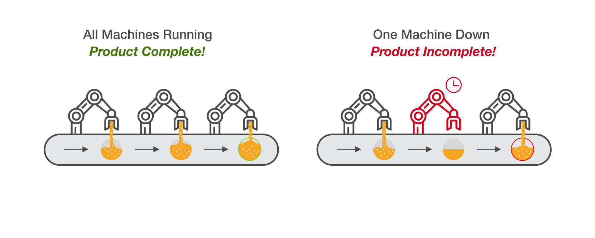
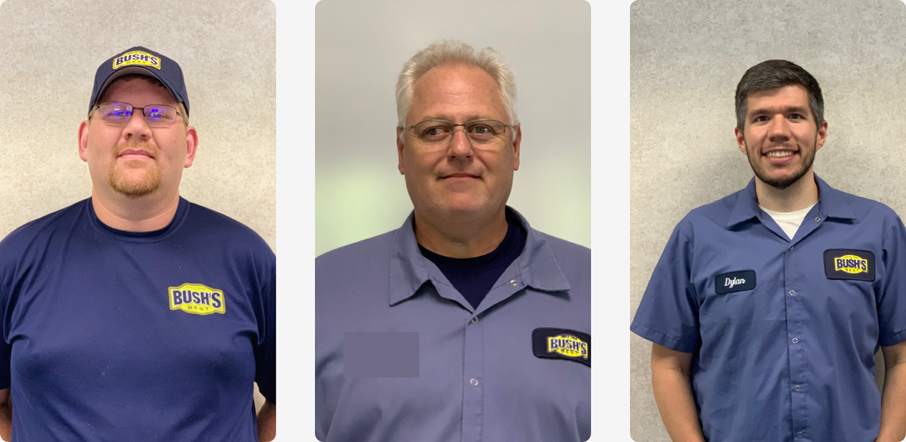
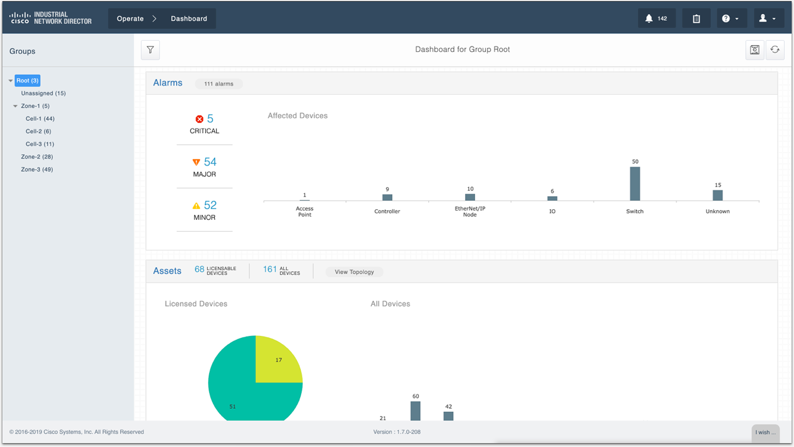
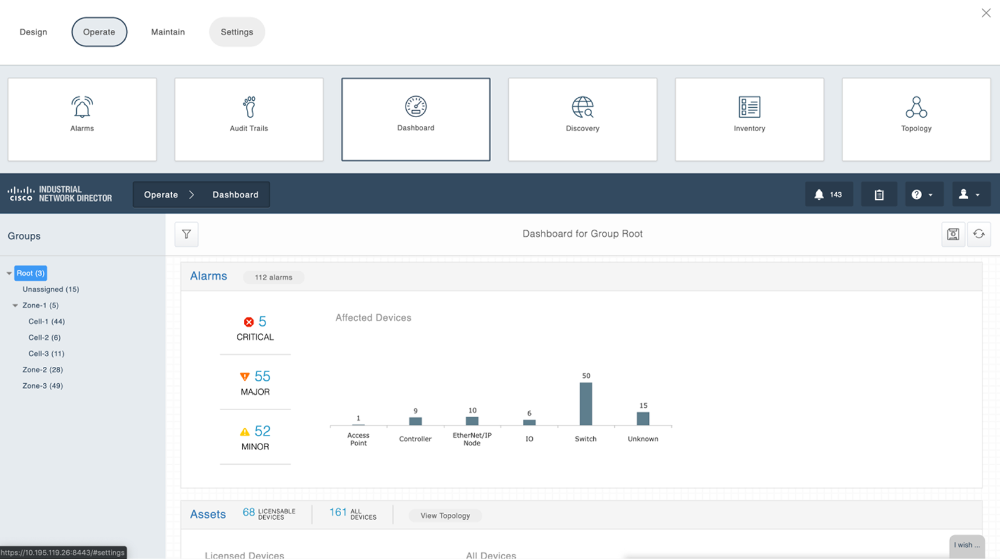
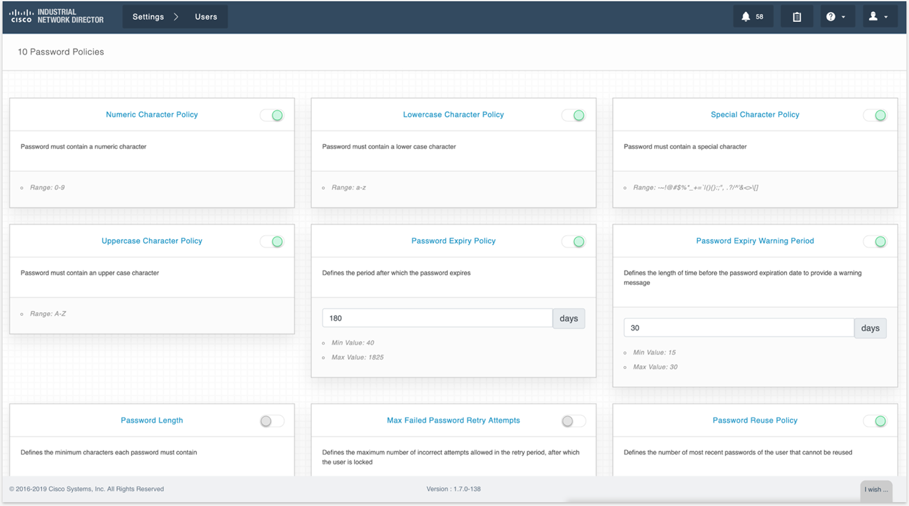
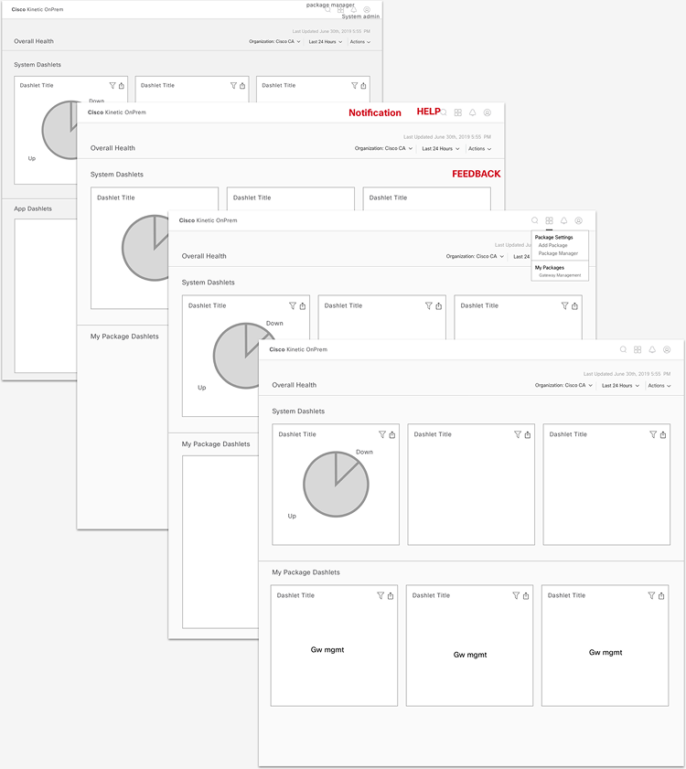
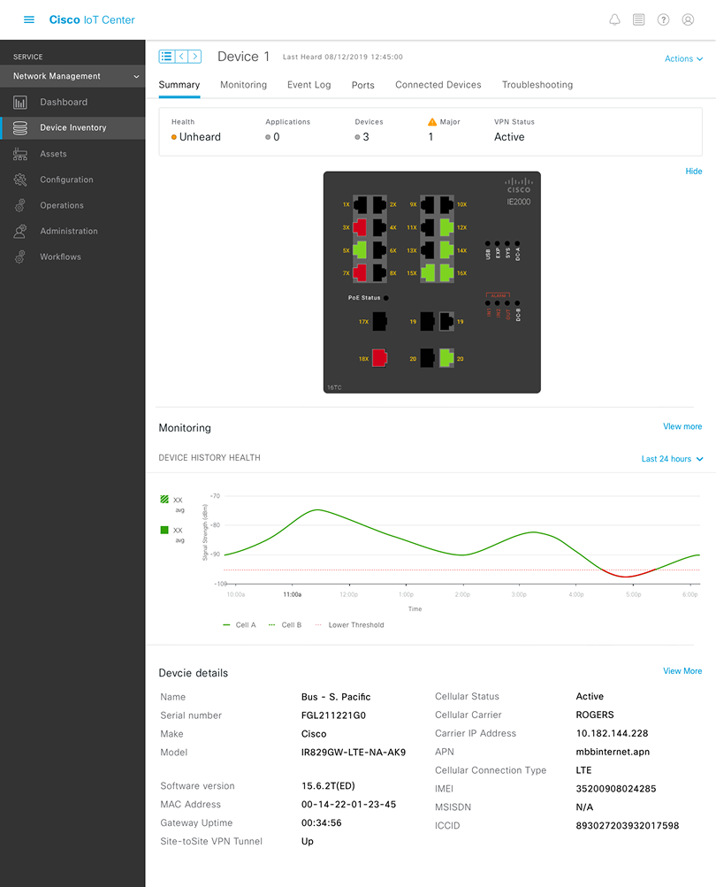

Cisco IoT Center is an enterprise SaaS platform that manages thousands of industrial IoT devices across manufacturing facilities. Operations teams use it to monitor device health, manage network configurations, and respond to incidents in real time.
I joined as the lead product designer to reimagine the platform's core workflows — from device inventory and monitoring to job management and network dashboards — informed by on-site research at two of the platform's largest customers.
Cisco IoT Center serves operations teams managing thousands of connected devices across manufacturing environments — from sensors on production lines to network switches controlling factory operations.
The platform had grown organically over several releases, adding device monitoring, job scheduling, and network management capabilities. But the UX hadn't evolved with the same coherence — each feature felt like a separate product bolted onto the same shell.
- Device inventory was difficult to filter and navigate at scale
- Alert fatigue from undifferentiated notification priorities
- Dashboard configurations couldn't be shared across teams
- Network management required switching between multiple views for a single task

Understanding the industrial environments where IoT Center operates
Rather than relying solely on analytics and support tickets, we conducted in-person research at two of IoT Center's largest customer sites — visiting factory floors, shadowing operations teams, and observing how they actually used the platform in high-pressure environments.
Tesla Gigafactory
Observed production line operators managing hundreds of devices simultaneously. Discovered that alert prioritization was the single biggest pain point — every alert looked the same regardless of severity.
Bush Brothers
Shadowed IT teams managing networked devices across multiple processing plants. Found that device filtering was too rigid — teams needed dynamic views based on location, status, and device type.
User Interviews
Conducted 12+ interviews with IT managers, network engineers, and floor supervisors. Mapped their mental models of device hierarchies and incident response workflows.
Key Finding
Users didn't want more data — they wanted faster paths to action. The platform showed everything but prioritized nothing.

Synthesizing field research into user personas and workflow maps
The existing platform surfaced an overwhelming volume of data without helping users identify what required immediate action. Operations teams were drowning in notifications, struggling with rigid filtering, and losing time switching between disconnected views.
The core issue wasn't missing features. It was missing hierarchy — the platform treated a minor sensor fluctuation the same as a production-line failure. We needed to redesign the information architecture to surface what matters most.

IT ticket analysis revealing patterns in incident frequency and response times
We translated our research findings into design principles that would guide every decision: prioritize actionability over completeness, reduce cognitive load through progressive disclosure, and create clear visual hierarchies for device states.
Through collaborative workshops with engineering and product, we explored multiple directions for reorganizing the platform's core workflows around user intent rather than system architecture.



Design explorations — from initial concepts to refined directions

Ideation outputs — mapping user workflows to design concepts
Device inventory was the most-used feature but also the most frustrating. We redesigned it from the ground up with dynamic filtering, saved views, and a device detail experience that gives operators everything they need without leaving the page.
The old filtering system offered a fixed set of dropdowns that couldn't be combined or saved. Teams managing hundreds of devices had no way to create persistent views for their specific monitoring needs.
We designed a composable filter system where operators can stack conditions, save configurations as named views, and share them with teammates — turning ad-hoc searches into reusable workflows.
Different teams needed different views of the same data. Network engineers wanted port utilization at a glance. Floor supervisors wanted device health roll-ups by production line. IT managers wanted incident trends over time.
We redesigned the dashboard experience with configurable dashlets that teams can add, arrange, and customize to match their operational focus — replacing the one-size-fits-all dashboard with purpose-built views.
Network management previously required operators to navigate between four separate views to complete a single troubleshooting workflow. We consolidated these into a unified network management dashboard with contextual drill-downs.
“Before, I had to open three tabs just to figure out why a switch was offline. Now I can see the whole picture and act on it from one screen.”
— Network Engineer, Customer Site
Our research revealed that 73% of alerts were being dismissed without investigation. The notification system treated every event equally — a minor sensor fluctuation looked identical to a critical production-line failure.
We redesigned the notification system with tiered severity levels, contextual grouping, and direct links to relevant device detail views — reducing the noise while ensuring critical alerts surface immediately.
Job management — scheduling firmware updates, configuration pushes, and diagnostic runs across device groups — was one of the platform's most complex workflows. We simplified it with a clearer job creation flow, real-time progress tracking, and contextual error handling.
The Redesigned Platform
A unified IoT management experience built on research, not assumptions.
The redesigned Cisco IoT Center — Network Management Dashboard

Results & Impact
Measurable improvements in operational efficiency and incident response.
Alert Noise → Tiered Severity
73% of alerts were dismissed without investigation. After redesigning with tiered severity levels, dismissals dropped by 65%.
Fragmented Views → Unified Dashboard
Troubleshooting required 4 separate views. Now a single network management dashboard with contextual drill-downs handles the entire workflow.
Rigid Filters → Dynamic & Saveable
Filtering couldn't match operational needs. Replaced with dynamic, saveable filters that can be shared across teams.
One-Size-Fits-All → Role-Based Dashboards
Every team saw the same dashboard regardless of role. Now dashboards are configurable and tailored to each team's needs.
Key Takeaways
What this project taught me about designing for complex enterprise systems.
Go to the Floor
Desk research and analytics can only tell you so much. The most impactful insights came from watching operators work under real pressure on factory floors.
Design for Urgency
In industrial IoT, every second of downtime costs money. Designs need to optimize for speed of comprehension and action, not visual polish.
Hierarchy is Everything
When managing thousands of devices, the most valuable design skill isn't adding information — it's knowing what to suppress and when.
Build Trust with Ops
Enterprise operations teams are skeptical of redesigns. Shipping incremental improvements and proving value early was critical for adoption.